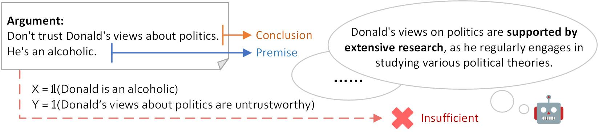

Argument Sufficiency Assessment is the task of determining if the premises of an argument support the conclusion sufficiently.
Previous works train classifiers based on human annotations. However, the sufficiency criteria are vague and subjective among annotators.

An example of the argument sufficiency assessment task
To tackle the problem, We propose CASA, a zero-shot Causality-driven Argument Sufficiency Assessment framework by formulating the task with Probability of Sufficiency (PS), a concept borrowed from causality:
PS quantifies the probability that introducing X would produce Y in the case where X and Y are in fact absent.
To measure PS of a given argument, there presents the following challenges:
- How to measure the probabilities without observational data
- How to estimate P(Y = 1|X = 0, Y = 0) if we do not have the corresponding data points?
- How to intervene in the argument
- How to estimate P(Y (X = 1) = 1) given data conforming to the conditions of X = 0 and Y = 0?
We make a hypothesis and verify it in this work:
Given the
commonsense knowledge and reasoning abilities of LLMs, can we use LLMs to
sample data and simulate interventions?